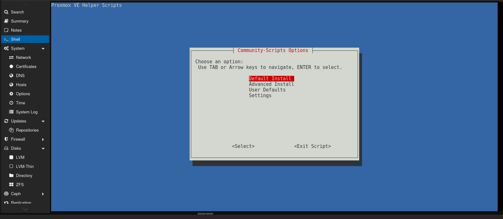
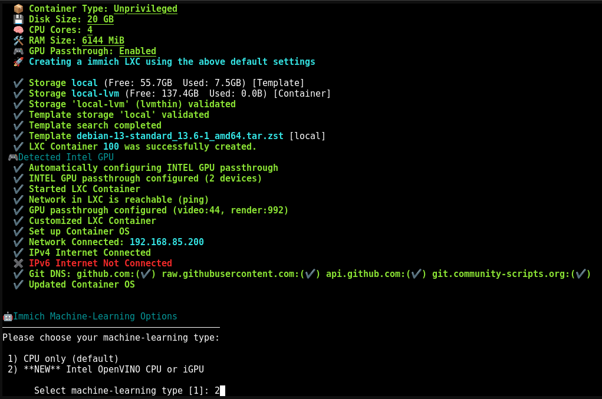
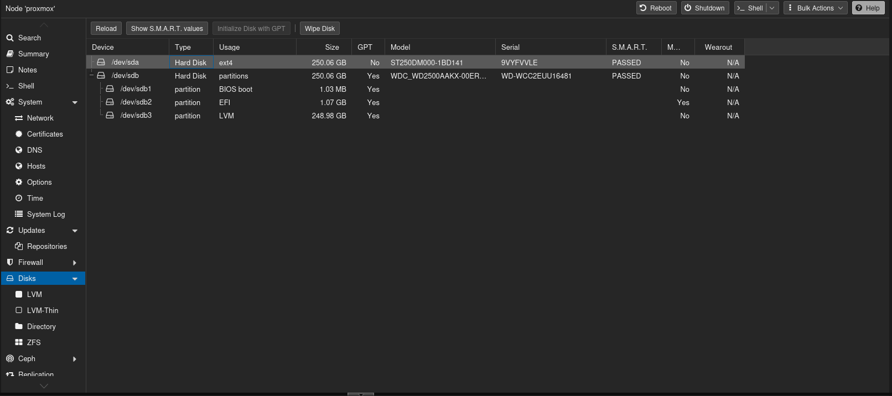
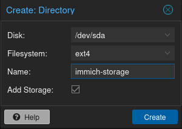
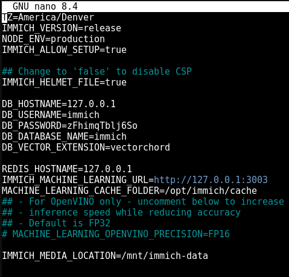
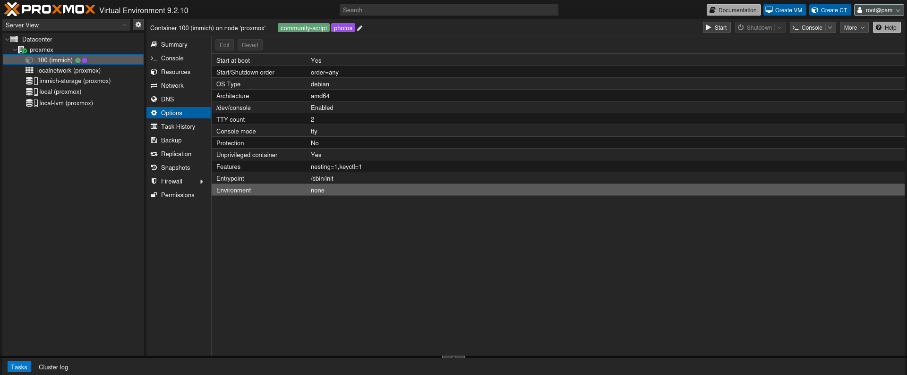
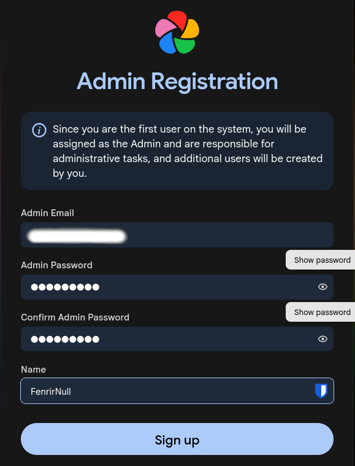

Immich is a self-hosted photo storage solution and a great alternative to Google Photos.
If you're like me and don't want Google having access to all of your photos, hosting your own photo library is a great option.
One of the problems with self-hosting anything is being able to access it when you're away from home. That's where Tailscale comes in.
Tailscale allows you to securely access your Immich server from outside your home network without exposing Immich directly to the public internet.
For this guide, I'm going to install Immich in an LXC container on Proxmox using the Proxmox Community Scripts .
If you haven't heard of the Proxmox Community Scripts project, it is a fantastic resource for quickly setting up applications in Proxmox.
For this installation, I'll be using their Immich Community Script .
Important Notes
Before getting started, there are a few things you should know.
- This guide assumes you already understand basic Proxmox administration.
- Wiping a disk will permanently erase all data on that disk.
- Always have backups before modifying storage.
-
Commands involving
pct, mounts, permissions, and LXC configuration can break your container if entered incorrectly. - Read each command before running it.
Step 1. Install Immich
First, open your Proxmox instance and open the Shell for your Proxmox node.
Run the following command:
bash -c "$(curl -fsSL https://raw.githubusercontent.com/community-scripts/ProxmoxVE/main/ct/immich.sh)"This will download and run the Immich installation script from the Proxmox Community Scripts project.
If you don't want to blindly copy that command into your shell, you can view the source code first:
Step 2. Select the Immich Options
When you run the script, it will bring you to a screen with several options for your Immich installation.

For this installation, I'm going to use the default settings.
You might want to change some things, such as the hard drive size.
You can also change some settings after installation. For example, you can resize the LXC from the Hardware tab of the container.
For this installation, I have a separate drive that I want to use for my Immich photos, so I'll configure that later in this tutorial.
Step 3. Configure Machine Learning
During the installation, it will bring up a prompt about the machine-learning type. It will ask whether you want to use your CPU or Intel OpenVINO.

The default option uses your CPU for machine-learning tasks.
I have had great performance using the CPU, even though I have an old CPU.
The Intel OpenVINO option can be used with compatible Intel hardware. Depending on your hardware, it can use the Intel CPU or offload some work onto the integrated GPU (iGPU).
For this installation, I'm going to try the second option.
You can change the amount of memory from the Hardware tab of the LXC container.
I'm going to keep mine the same because I don't actually have any more RAM.
Step 4. Wait for the Installation to Finish
Now comes the hardest part:
Wait.
The installation can take anywhere from 15 minutes to 2 hours depending on your hardware.
It took my computer approximately 30 minutes.
After the installation is complete, update the system:
apt update
apt upgradeStep 5. Configure the Other Hard Drive
I want a separate drive for all of my Immich photos.
Partly because I don't want the main drive for Proxmox to fail and then lose all of my pictures, but also because I only have two 250 GB drives and want to be able to use all of the available storage.
To do this, you first need another drive. That is outside the scope of this tutorial, so I'll assume that you already have one installed.
In the Proxmox web interface, select your Proxmox node and find the Disks tab.

Select the drive you want to use and click Wipe Disk.
Next, initialize the disk with GPT.
Then go to the Directory section of the Proxmox Disks page.
Click Create: Directory and configure it using the disk you just prepared.

For this guide, I'll assume the resulting storage path is:
/mnt/pve/immich-storageStep 6. The Scary Part — The CLI
Shut down your Immich container.
On your Proxmox node, create the directory where the images will live:
mkdir -p /mnt/pve/immich-storage/immich-dataNext, create the mount point:
pct set <container-id> -mp0 /mnt/pve/immich-storage/immich-data,mp=/mnt/immich-data
Replace <container-id> with your
Immich container ID.
This attaches the host directory as a mount point inside the LXC container.
Now fix the permissions:
chown -R 100000:100000 /mnt/pve/immich-storage/immich-dataNow start your Immich container again.
Step 7. Configure the Mount
Open the shell inside your Immich LXC container.
Stop the Immich web and machine-learning services:
systemctl stop immich-web immich-mlTo verify that the mount worked, run:
ls /mntYou should see:
immich-dataChange the Upload Location
If you installed Immich through the LXC Community Script, the configuration file is located at:
/opt/immich/.envOpen it using nano:
nano /opt/immich/.envFind the line containing:
IMMICH_MEDIA_LOCATIONChange it to:
IMMICH_MEDIA_LOCATION=/mnt/immich-data
Save and exit nano using:
- Press Ctrl+O
- Press Enter
- Press Ctrl+X
Move Existing Files
There's one more thing I forgot about the first time I did this.
You need to move what is currently on the old drive to the new drive.
Run:
cp -a /opt/immich/upload/. /mnt/immich-data/Then modify the permissions:
chown -R immich:immich /mnt/immich-dataFinally, reboot the system:
rebootStep 8. Prepare to Install Tailscale
I want to be able to access this from anywhere.
We can achieve that using Tailscale, which means we don't have to expose Immich directly to the internet.
The problem is that this is an unprivileged LXC container, so we have to do some extra configuration.
Stop the container from the Proxmox shell:
pct stop <container-id>
The issue with an unprivileged container is that it needs
access to the /dev/net/tun device, which is
blocked by default.
In the Proxmox shell, open the LXC configuration file:
nano /etc/pve/lxc/<container-id>.confAdd these two lines to the bottom:
lxc.cgroup2.devices.allow: c 10:200 rwm
lxc.mount.entry: /dev/net/tun dev/net/tun none bind,create=fileSave the file.
Enable Nesting
In the Proxmox web GUI, go to your Immich LXC container.
Navigate to:
Options → FeaturesMake sure Nesting is enabled.

It was enabled for me by default, but it is worth checking.
Now start the LXC container.
Step 9. Install Tailscale
Inside the Immich LXC container, run:
curl -fsSL https://tailscale.com/install.sh | shAgain, if you prefer to read through everything happening in the script, you can review it before running it.
Once Tailscale is installed, run:
tailscale upTailscale will give you a link to log in.
Open the link and log into your Tailscale account.
Once you've finished authenticating the machine, it will be added to your Tailscale network.
Reboot the container:
rebootTailscale is Installed!
Your Immich server should now be connected to your Tailscale network.
Step 10. Set Up the Immich Server
Now we need to access the Immich web interface.
Inside your Immich LXC container, run:
ip aFind the network interface. It should look something like:
eth0@if26: <BROADCAST,MULTICAST,UP,LOWER_UP> mtu 1500 qdisc noqueue state UP group default qlen 1000You should be able to find your IP address on or near this interface.
Open a web browser and go to:
http://<ip-address>:2283
Replace <ip-address> with the IP address
of your Immich container.
You should now see the Immich setup page.
Click Getting Started and create your Immich user.

Step 11. Access Immich From Your Other Devices
Now for the fun part.
Install Tailscale on your phone, tablet, laptop, or whatever device you want to use to access Immich.
On Android, Tailscale is available through the Google Play Store.
Log into the same Tailscale account you used for your Immich server.
Once connected, you should be able to see your Immich server from your device.
If you click on your Immich server in Tailscale, you can see a lot of information about it.
Most importantly, you'll see:
- The MagicDNS address
- The IPv4 address
- The IPv6 address
Install the Immich App
Download the Immich mobile app on your phone.
When the Immich app asks for your server address, you can use either the Tailscale IP address or the MagicDNS address.
For example:
http://100.x.x.x:2283Or:
http://your-immich-server:2283Log in with the username and password you created earlier.
🎉 You Did It!
You now have your own self-hosted photo library that you can access from anywhere your devices are connected to Tailscale.
And you didn't have to expose Immich directly to the public internet.
Final Thoughts
There are a lot of moving parts in this setup:
- Proxmox
- An Immich LXC container
- Separate storage
- LXC mount points
- Immich configuration
- Tailscale
- Your mobile devices
But once everything is configured, the end result is pretty awesome.
You get your own private photo library, your photos stay on your own hardware, and Tailscale gives you a convenient way to access them when you're away from home.